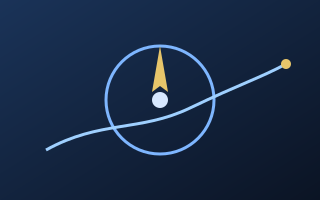
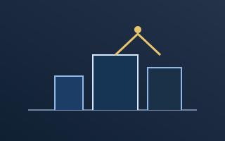
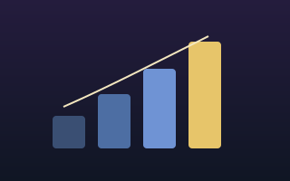

The Digital Twin
Learn and train. Create the context for understanding and practice.
Draft for feedback. Same layout as the education and government review. Outcomes is added at the end. Assist IQ is retired. EON Tacit and Brainy Soft Skills stay as two products.
The EON product foundation
The Digital Twin is how people learn and train. The Work Loop is how they perform. Outcomes, below, is how that capability becomes a job, and how they keep it.
Kept from the review
The two columns stay as they are on the review site. The purpose of each column is named in plain language: learn and train, then perform. Outcomes follows in the same row format.
Learn and train. Create the context for understanding and practice.
Perform. Apply knowledge, inspect evidence and improve.
These four products stay. They sit after the platform, in the same row format, because they are what the learning is for.

Skills to jobs to income. A personal path from what a person can do to work they can hold.

From a local problem to a launched venture, without a technical background.

The skill under every other skill. Find the gap, build the fluency, reach the level the work needs.
Module links open the existing education and government review. Outcome links open the current Global Virtual Campus. Outcome pictures are stand-ins until the campus artwork is used. Compare with the review layout ↗